Cluster Santos Dumont¶
Após concluir a configuração da VPN, ative a VPN para ser possível acessar o Santos Dumont via SSH.
Em um terminal novo utilize o comando;
ssh -o MACs=hmac-sha2-256 seu-login-de-acesso@login.sdumont.lncc.br
ssh seu-login-de-acesso@login.sdumont.lncc.br
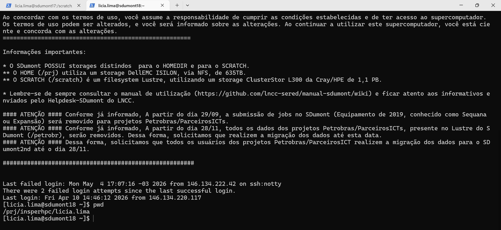
Note que sua "home" é a pasta de projeto, chamada "/prj/insperhpc/seu-login", não submeta jobs desta pasta. Para executar e testar seus códigos, utilize a pasta SCRATCH, que é o ambiente apropriado para processamento e armazenamento temporário de arquivos.
cd /scratch/insperhpc/seu-login
Configurando Acesso SSH ao GitHub dentro do Santos Dumont¶
É importante configurar o GitHub para que você possa realizar clones e commits em repositórios privados.
Gerar uma nova chave SSH¶
No terminal já autenticado no cluster, execute o seguinte comando:
ssh-keygen -t ed25519 -C "seu_email_do_github"
Pressione Enter eternamente até que apareça algo como:
...bla bla bla, criamos as chaves nos diretórios
/prj/insperhpc/seu-login/.ssh/id_ed25519 ← chave privada
/prj/insperhpc/seu-login/.ssh/id_ed25519.pub ← chave pública
Copie a chave pública usando o comando:
cat /prj/insperhpc/>>>>>>>>seu-login<<<<<<</.ssh/id_ed25519.pub
Copie toda a linha exibida, começa com ssh-ed25519, e termina com o seu email.
Adicione a chave no seu GitHub
-
Acesse GitHub
-
Vá em Settings
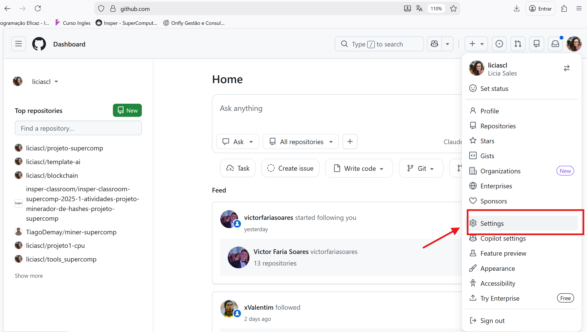
- Clique em SSH and GPG keys
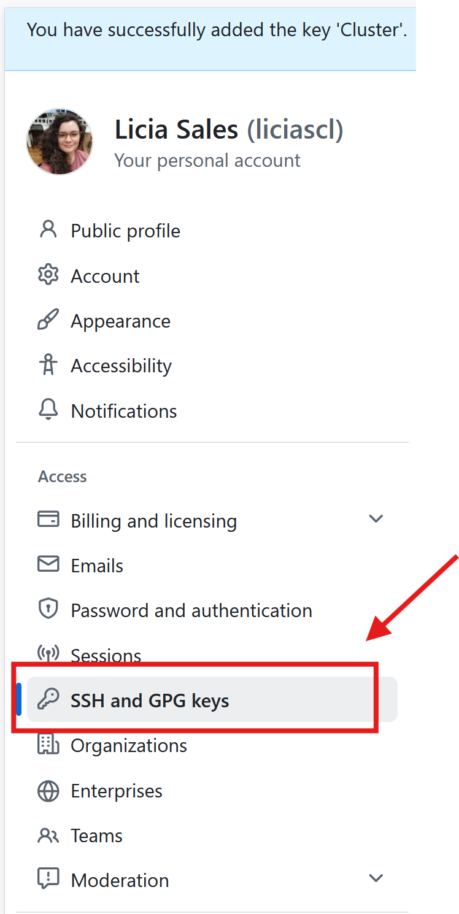
- Clique em New SSH key
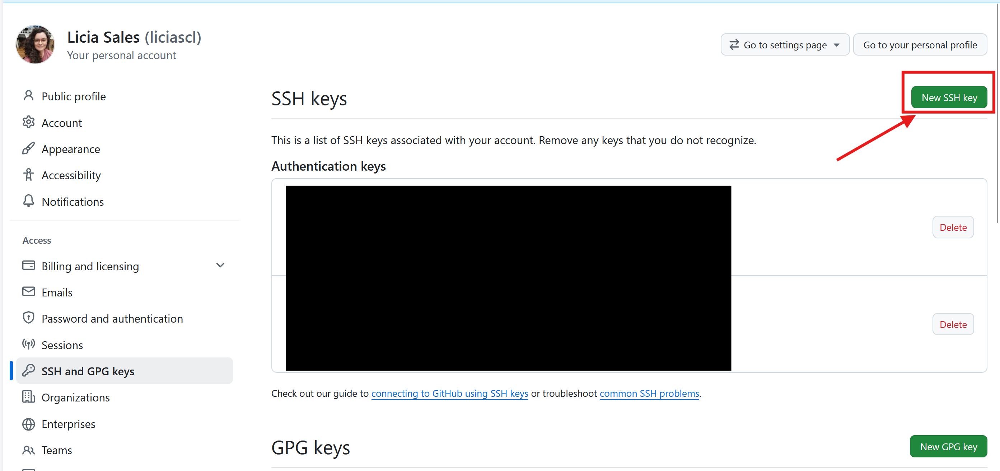
- Cole a chave pública e depois clique em "Add SSH key"
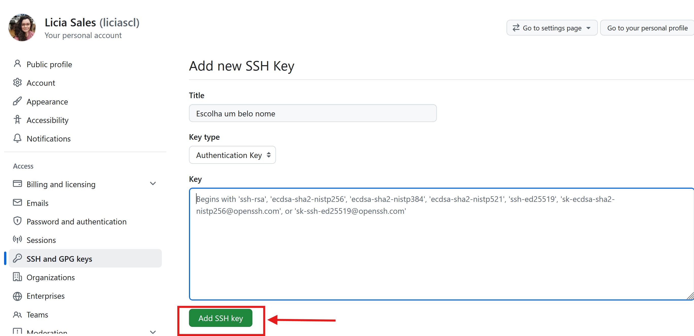
Teste a conexão¶
ssh -T git@github.com
Se estiver correto, aparecerá:
Hi usuario! You've successfully authenticated...
Ambientação no Santos Dumont¶
Antes de começar a fazer pedidos de recursos pro SLURM, vamos conhecer as filas que temos acesso e o hardware que temos disponível em cada fila.
sacctmgr list user $USER -s format=partition%20,MaxJobs,MaxSubmit,MaxNodes,MaxCPUs,MaxWall
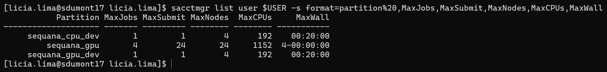
As filas que temos acesso tem essas características:
Fila sequana_cpu_dev¶
A fila sequana_cpu_dev pode ser usada para testes em CPU, permitindo a execução de apenas 1 job por vez, utilizando até 4 nós e 192 CPUs por job, com tempo limite de 20 minutos. A infraestrutura disponível conta com 166 nós e 7968 CPUs no total, com 8 GB de memória por CPU, somando aproximadamente 62 TB de memória.
Fila sequana_gpu_dev¶
A fila sequana_gpu_dev pode ser usada para testes com uso de GPU, também limitada a 1 job por vez, podendo utilizar até 4 nós e 192 CPUs por job, com tempo máximo de 20 minutos. Disponibiliza 61 nós, 2928 CPUs e 244 GPUs, com configuração padrão de 12 núcleos de CPUs por GPU e 94 GB de memória por GPU. A memória por CPU é de 8 GB.
Fila sequana_gpu¶
A fila sequana_gpu é a principal fila utilizada para execução de jobs em GPU, permitindo até 4 jobs simultâneos e 24 submissões, com uso de até 24 nós e 1152 CPUs por job, e tempo máximo de execução de até 4 dias. Possui 87 nós, 4176 CPUs e 348 GPUs, mantendo a proporção padrão de 12 CPUs por GPU e 94 GB de memória por GPU. A memória por CPU é de 8 GB, totalizando aproximadamente 32 TB.
Explorando com o SRUN¶
Vale lembrar que podemos pedir via SRUN um terminal dentro do nó de computação, para, de forma livre, executar qualquer comando:
srun --partition=sequana_gpu_dev --gres=gpu:1 --pty bash
Para sair, basta digitar no terminal:
exit
Ou, podemos usar o SRUN com um comando definido que será executado no nó de computação de forma direta pelo terminal:
srun --partition=sequana_gpu_dev --gres=gpu:1 --ntasks=1 --pty bash -c \
"echo '=== HOSTNAME ==='; hostname; echo; \
echo '=== MEMORIA (GB) ==='; \
cat /proc/meminfo | grep -E 'MemTotal|MemFree|MemAvailable|Swap' | \
awk '{printf \"%s %.2f GB\\n\", \$1, \$2 / 1048576}'; \
echo; \
echo '=== CPU INFO ==='; \
lscpu | grep -E 'Model name|Socket|Core|Thread|CPU\\(s\\)|cache'
echo '=== GPU INFO ==='; \
if command -v nvidia-smi &> /dev/null; then nvidia-smi; else echo 'nvidia-smi não disponível'; fi"
srun --partition=sequana_cpu_dev --ntasks=1 --pty bash -c \
"echo '=== HOSTNAME ==='; hostname; echo; \
echo '=== MEMORIA (GB) ==='; \
cat /proc/meminfo | grep -E 'MemTotal|MemFree|MemAvailable|Swap' | \
awk '{printf \"%s %.2f GB\\n\", \$1, \$2 / 1048576}'; \
echo; \
echo '=== CPU INFO ==='; \
lscpu | grep -E 'Model name|Socket|Core|Thread|CPU\\(s\\)|cache'
echo '=== GPU INFO ==='; \
if command -v nvidia-smi &> /dev/null; then nvidia-smi; else echo 'nvidia-smi não disponível'; fi"
O comando sinfo mostra quais são as filas e quais são os status dos nós
sinfo
Este comando filtra por projeto, então só veremos os jobs relacionados aos alunos do Insper
squeue -A insperhpc
squeue -u $USER
Este filtra pela fila
sinfo -p sequana_gpu_dev
sinfo -p sequana_cpu_dev
sinfo -p sequana_gpu
Carregando módulos no sistema¶
No Cluster Franky precisamos carregar o módulo da GPU para conseguir compilar os códigos em CUDA e executar os binários na GPU. No Santos Dumont, não é diferente, porém, temos mais módulos disponíveis:
Com o comando:
module avail cuda
Você pode ver a lista de módulos cuda disponíveis:
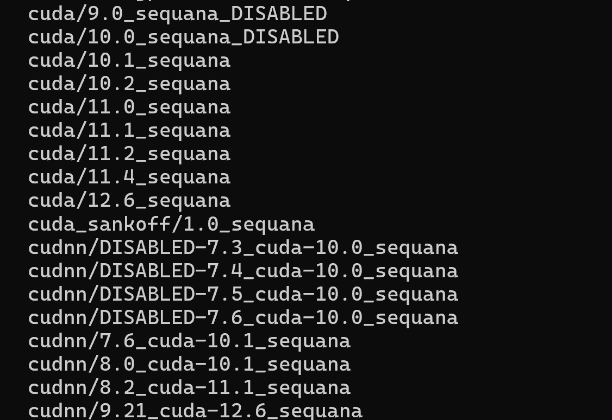
Eu costumo usar o modulo mais próximo ao que temos no Cluster Franky para garantir portabilidade de código, mas fique a vontade para escolher e testar a versão que quiser:
Para carregar o módulo:
module load cuda/12.6_sequana
Crie o arquivo
hello.cu
#include <iostream>
#include <iomanip>
#include <cuda_runtime.h>
// KERNEL CUDA
__global__ void helloGPU()
{
// ID global da thread
int global_id =
blockIdx.x * blockDim.x + threadIdx.x;
// Warp ao qual a thread pertence
int warp_id = threadIdx.x / warpSize;
// blockIdx.x -> bloco atual
// threadIdx.x -> thread dentro do bloco
// global_id -> thread global no grid
// warp_id -> warp da thread
//
printf(
"[Bloco %02d] "
"[Thread %02d] "
"[Global ID %03d] "
"[Warp %02d]\n",
blockIdx.x,
threadIdx.x,
global_id,
warp_id
);
}
int main()
{
cudaDeviceProp hw;
// Obtém informações da GPU
cudaGetDeviceProperties(&hw, 0);
// Configuração do kernel
int blocks = 1;
int threads = 40;
std::cout << "GPU: "
<< hw.name << "\n";
std::cout << "Memoria Global: "
<< std::fixed
<< std::setprecision(2)
<< hw.totalGlobalMem /
(1024.0 * 1024.0 * 1024.0)
<< " GB\n";
std::cout << "SMs: "
<< hw.multiProcessorCount << "\n";
std::cout << "Warp: "
<< hw.warpSize << "\n";
std::cout << "Max Threads/Bloco: "
<< hw.maxThreadsPerBlock << "\n";
std::cout << "\n";
// ==================================================
// CONFIGURAÇÃO DO GRID
// ==================================================
std::cout << "Blocos: "
<< blocks << "\n";
std::cout << "Threads por bloco: "
<< threads << "\n";
std::cout << "Total de threads: "
<< blocks * threads << "\n";
std::cout << "Warps por bloco: "
<< (threads + hw.warpSize - 1)
/ hw.warpSize
<< "\n";
std::cout << "========================================\n\n";
// EXECUTA O KERNEL
helloGPU<<<blocks, threads>>>();
// Espera a GPU terminar
cudaDeviceSynchronize();
return 0;
}
Para compilar use
nvcc -O3 hello.cu -o hello
Para executar use:
srun --partition=sequana_gpu_dev --gres=gpu:1 ./hello
Se quiser submeter um job com sbatch:
run.slurm
#!/bin/bash
#SBATCH --job-name=exemplo_gpu
#SBATCH --output=saida_%j.txt
#SBATCH --time=00:10:00
#SBATCH --gres=gpu:1
#SBATCH --partition=sequana_gpu_dev
#SBATCH --mem=1G # 1 GiB por nó
module load cuda/12.6_sequana
./hello
sbatch run.slurm
Sugiro que troque o valor de 'blocos' e de 'threads' para ver como diferentes configurações são alocadas na GPU
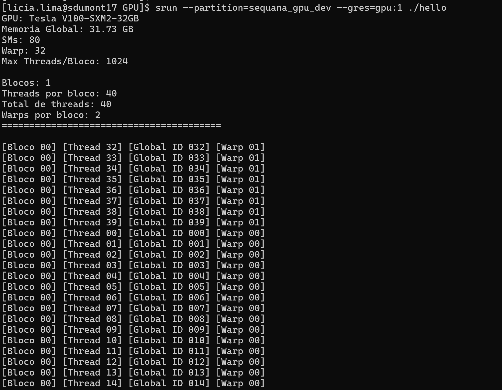
Agora que já aprendemos a acessar a pasta SCRATCH, configurar o GitHub, carregar módulos e submeter jobs com GPU alocada, vamos colocar tudo isso em prática:
Testando a APS2 no SDumont¶
Para realizar testes da APS2 é importante clonar o repositório na pasta SCRATCH
lembrando, para estar na pasta SCRATCH utilize o comando:
cd /scratch/insperhpc/seu-login
faça o clone do repositório:
git clone git@github.com:insper-classroom/>>>>>>>>>aps2-seu-login<<<<<<<<<<<.git
Se você apenas der make vamos ter alguns problemas...
É importante garantir que você tem os arquivos main_cpu.cpp e main_gpu.cu para compilar corretamente usando o Makefile disponibilizado.
É importante também que você carregue o módulo do gcc antes de fazer as compilações, temos várias opções disponíveis, eu vou utilizar esta para garantir compatibilidade com o modulo cuda.
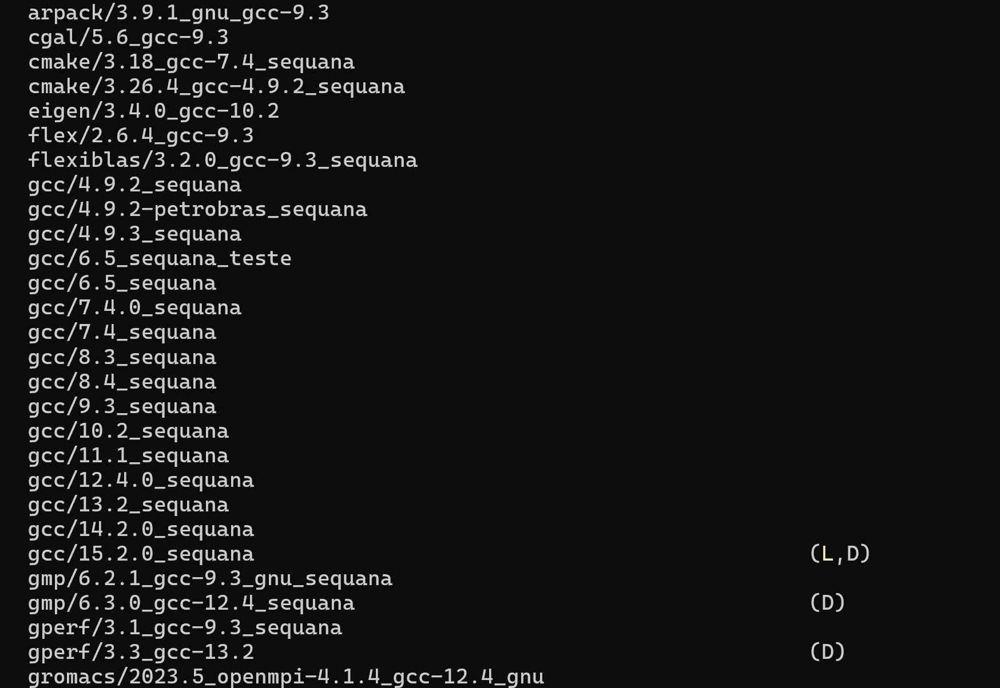
module load gcc/12.4.0_sequana
module load cuda/12.6_sequana
O Emil usou um compilador gcc mais novo no desenvolvimento do código base, se você compilar o código sem fazer uma pequena alteração, vai aparecer um erro como este:
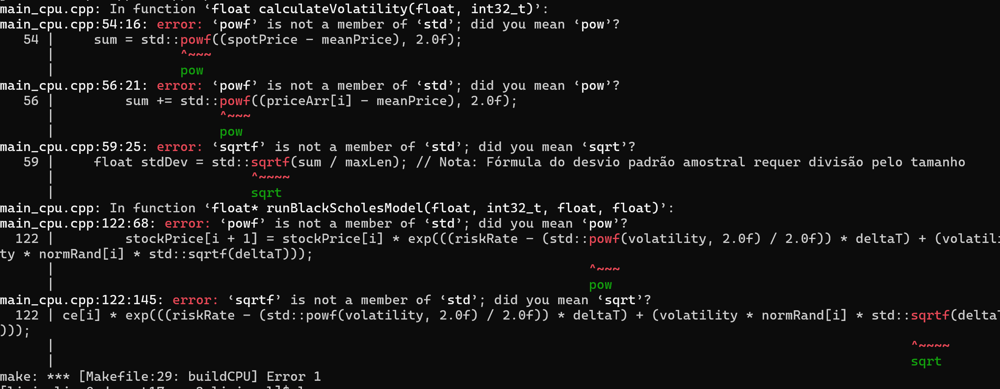
basta trocar powf por pow e sqrtf por sqrt no seu código que vai compilar sem erros.
Seu arquivo Makefile deve definir os parâmetros de complexidade computacional utilizados nos testes.
Para os primeiros experimentos, vamos utilizar uma configuração mais simples, garantindo que a execução seja rápida e fácil de validar;
# Execuções
runCPU:
./$(CPU_EXE) 100 100 100 100 0.5 0.5
Após estes ajustes execute o comando:
make buildCPU
Depois de gerar os binários, teste o código:
srun --partition=sequana_cpu_dev make runCPU
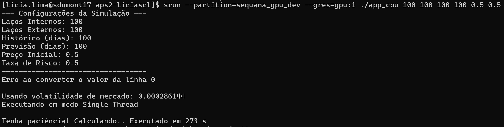
Ou use o sbatch
#!/bin/bash
#SBATCH --job-name=exemplo_gpu
#SBATCH --output=saida.txt
#SBATCH --time=00:10:00
#SBATCH --gres=gpu:1
#SBATCH --partition=sequana_gpu_dev
#SBATCH --mem=1G
#carregue os modulos
module load gcc/12.4.0_sequana
module load cuda/12.6_sequana
#Execute o binario
make runCPU
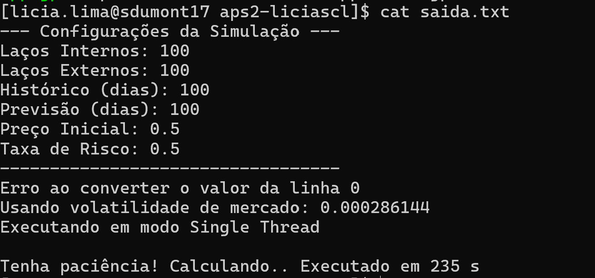
Desta forma testamos a versão CPU sequencial do código.
Entendendo o código base¶
O código base da APS2 implementa uma simulação do comportamento das ações da NVIDIA utilizando o modelo de Black-Scholes aliado ao Método de Monte Carlo.
A aplicação utiliza dados históricos de fechamento das ações para calcular a volatilidade do mercado e, a partir disso, gerar múltiplas projeções probabilísticas para o preço futuro do ativo.
Quando você configura os parâmetros desta forma, como no exemplo:
# Execuções
runCPU:
./$(CPU_EXE) 100 100 100 100 0.5 0.5
| Parâmetro | Valor | Significado |
|---|---|---|
inLoops |
100 |
Quantidade de simulações |
outLoops |
100 |
Quantidade total de execuções do método de Monte Carlo |
timeStepsHistory |
100 |
Janela de dados históricos utilizados para calcular a volatilidade |
timeStepsForecast |
100 |
Janela de tempo para a previsão futura |
spotPrice |
0.5 |
Preço inicial da ação no instante inicial |
riskRate |
0.5 |
Taxa livre de risco utilizada no modelo matemático |
Na prática, configurar:
# Execuções
runCPU:
./$(CPU_EXE) 100 100 100 100 0.5 0.5
significa:
- Executar 100 simulações
- Executar o Monte Carlo 100 vezes
- Utilizar 100 amostras históricas do mercado
- Projetar 100 passos temporais futuros
- Considerar um preço inicial da ação igual a 0.5
- Utilizar taxa de risco de 0.5
Lembrando que para a entrega da APS2 a configuração dos testes muda de acordo com a rúbrica, para validar a pontuação inicial, você deve cumprir os seguintes critérios:
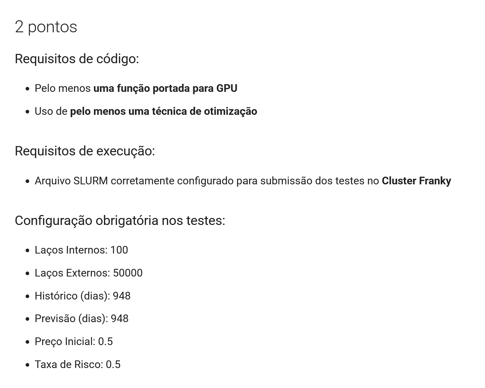
Pontuação Bônus na APS2¶
Para validar a pontuação bônus na APS2, devem ser atendidos os seguintes requisitos:
Requisitos de testes¶
Disponibilizar arquivos SLURM corretamente configurados para submissão e execução dos testes nos dois clusters:
- Cluster Franky
- Cluster Santos Dumont
Requisitos de análise¶
Apresentar gráficos e tabelas comparando o desempenho obtido em cada ambiente.
As análises dos resultados devem considerar os impactos da arquitetura da GPU em cada ambiente.